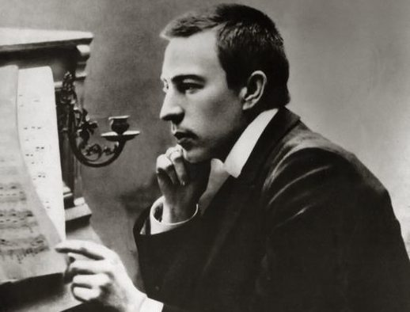

Rachmaninoff was born into an aristocratic family in Russia. He began studying piano and composition at an early age and showed remarkable talent. However, his family's financial troubles forced them to sell their estate, and Rachmaninoff had to study at the Moscow Conservatory on a scholarship. He suffered from depression and self-doubt after the poor reception of his first symphony, and he underwent hypnotherapy to overcome his mental block. His second piano concerto, written during this time, became one of his most famous works and helped restore his confidence.
- Piano Concerto No. 2 in C Minor
- Rhapsody on a Theme of Paganini
- Symphonic Dances
- Etudes-Tableaux
- Vespers (All-Night Vigil)
- Piano Sonata No. 2 in B-flat Minor
- Isle of the Dead
Contributions to Modern Music
Rachmaninoff was a key figure in the development of modern classical music. His music was characterized by rich, complex harmonies and emotionally charged melodies that pushed the boundaries of traditional tonality. He was particularly influential in the realm of piano music, where he developed a new style of virtuosic writing that emphasized technical skill and emotional expressiveness. His works for solo piano, such as his Preludes and Etudes-Tableaux, remain staples of the piano repertoire to this day.
Personal Life
Rachmaninoff's personal life was deeply affected by his struggles with depression. He faced several setbacks throughout his life, including the negative reception of his first symphony, which led him to fall into a deep depression. Rachmaninoff stopped composing for several years and sought treatment with psychotherapy and hypnosis. His depression eventually lifted, and he resumed composing, producing some of his greatest works, including his second piano concerto. Despite the initial negative reception, Rachmaninoff's second piano concerto quickly became a beloved and celebrated work. The piece was composed during a difficult period in Rachmaninoff's life when he was struggling with depression and a creative block. Writing the concerto allowed him to express his emotions and helped him overcome his struggles. The second piano concerto is a testament to Rachmaninoff's ability to channel his emotions into his music and create something beautiful out of his pain. In addition to his struggles with depression, Rachmaninoff faced several other personal challenges throughout his life. He and his family were forced to flee Russia during the revolution and settle in the United States, which was a difficult transition for him. Despite these challenges, Rachmaninoff continued to compose and perform until the end of his life. His music remains a testament to his ability to overcome adversity and create something beautiful out of life's struggles.
Legacy
Rachmaninoff's legacy continues to be felt in modern music. His works have been performed and recorded by countless musicians and orchestras, and his influence can be heard in the music of many composers who came after him. His music continues to be a favorite of classical music lovers around the world, and his contributions to modern music will always be remembered.
Arthur Rubinstein, piano; Chicago Symphony Orchestra, Fritz Reiner, cond. RCA/BMG, recorded Jan. 9, 1956
Rachmaninoff Piano Concerto No.2 in C minor
Rachmaninoff's Second Piano Concerto is considered one of his most famous and beloved works. Composed in 1900, it is a romantic and dramatic piece that showcases Rachmaninoff's incredible pianistic abilities. The concerto is composed of three movements, with the first movement beginning with a powerful and memorable opening theme. The second movement is a beautiful and melancholic adagio, which showcases Rachmaninoff's ability to create incredibly emotional and expressive music. The final movement is a fast and virtuosic showcase for the piano, ending the concerto on an energetic and triumphant note. The concerto has been recorded by many of the world's greatest pianists, and remains a beloved and popular work in the classical music repertoire.
The Death
Rachmaninoff died on March 28, 1943, in Beverly Hills, California, after a battle with advanced melanoma. He was buried in the Kensico Cemetery in Valhalla, New York. His death was mourned by the musical community around the world, and his legacy as a composer, pianist, and conductor lives on to this day.